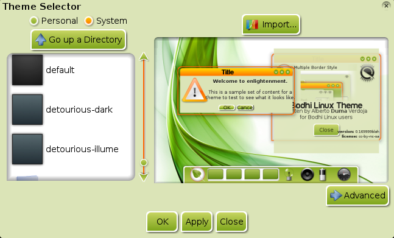
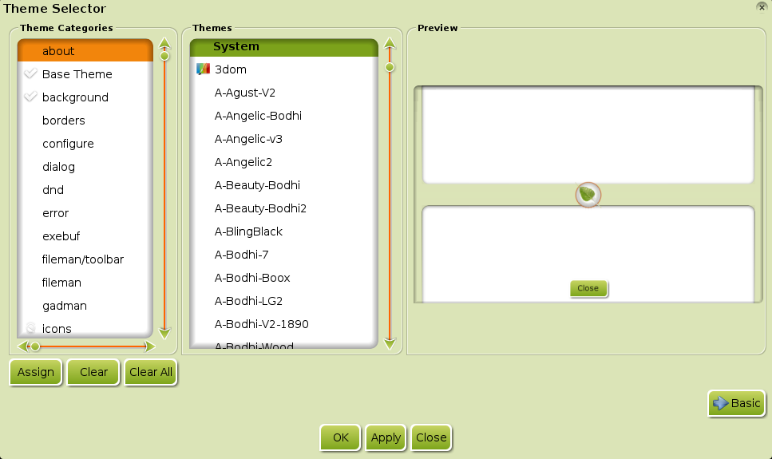
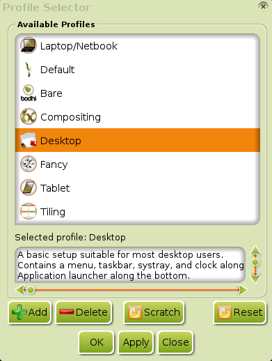
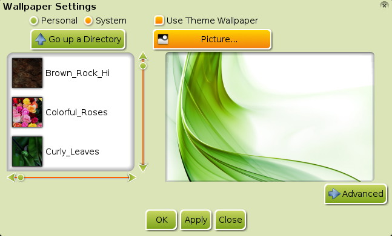

[kliknite na bilo koju sliku za uvećanje]
Enlightenment (E17) pruža korisniku veliki stepen kontrole pri konfigurisanju njegovog kompjuterskog okruženja. Često se dešava da korisnici E17 provode sate igrajući se sa različitim podešavanjima dok ga ne prilagode svojim potrebama. Neki korisnici su bili ljubazni da podele sa nama svoje radove u vezi korišćenja Tema.
Teme obezbeđuju način da se spakuju zajedno različiti aspekti koji menjaju izgled vaše radne površine.
Ukratko, one daju odgovor na pitanje kako
prikazati različite aspekte na vašoj radnoj površini. Ovo se može odnositi na skoro sve, od pozadine(background) do Sat
Gedžeta i tako dalje.
- Menjanje Tema (Switching Themes)
- Dodavanje Tema (Adding Themes)
- Napredne Teme (Advanced Themes)
- Promena samo Pozadine (Changing Just the Background)
- Razmatranja o Drugoj Temi (Other Theme Considerations)
Menjanje Tema
Da bi pokrenuli dijalog Selektor Tema idite na Main Menu>Settings>Theme. (Ako ne vidite ovu opciju, možda morate da učitate Tema Modul)
Ovo je osnovni izgled Selektora Tema:
{kind=link}
Lista sa leve strane prikazuje sve dostupne Teme. Kliktanjem na jednu od njih će prikazati pregled Teme sa desne strane. Kada nađete Temu koja vam se sviđa, selektujte je u listi i kliknite OK pa Apply. Promene će odmah biti vidljive. U slučaju da se to ne dogodi, pokušajte da restartujete E17 (Main Menu>Enlightenment>Restart ili CTRL+ALT+END).
Možda se pitate šta znače Lične (Personal) i
Sistem (System) opcije u levom gornjem uglu dijaloga. To jednostavno označava u kom direktorijumu će Selektor Tema tražiti Teme.
Sistem (System) opcija mu kaže da traži u
/usr/share/enlightenment/data/themes/. Lična (Personal)
opcija pokazuje na ~/.e/e/themes/. Ake ste kreativni i želite da sami napravite svoju temu ovde je možete sačuvati. (Vidite
Pravljenje Tema)
Takođe vas ohrabrujemo da razmislite o tome da je podelite sa ostatkom
Bodhi Linux zajednice.
Dodavanje Tema
Po standardu (default), Bodhi dolazi samo sa nekoliko Tema. Možete preuzeti druge preko Bodhi's Art Wiki (spoljni link). Pratite link do Enlightenment Themes, možete instalirati ceo paket Bodhi Tema (Bodhi Theme Pack) sa mnogim lepim temama koje su napravili članovi naše zajednice.
Jednom kada su instalirane, vaše nove Teme bi trebalo da se pojave pod opcijama System Theme.
Možda želite takođe da pogledate Enlightenment Razmenu (Exchange) (spoljni link) za druge teme koje je napravila veća E17 zajednica.
Napredne Teme
Do sada ste verovatno isprobali nekoliko različitih Tema. Sigurno imate nešto što vam se kod neke teme dopada i ne dopada, i želite da možete da koristite Meni iz jedne Teme zajedno sa Satom iz druge. Kao što je ranije rečeno, korisnik kontroliše svoju radnu površinu, i Selektor Tema vam omogućava da sa lakoćom miksujete različite elemente iz različitih Tema.
Otvorite Selektor Tema i kliknite dugme Advanced u donjem desnom uglu. Dijalog će se proširiti na tri sekcije:
{kind=link}
Prva sekcija sa leve strane, Kategorije Tema (Theme Categories), prikazuje sve različite opcije koje Teme mogu kontrolisati. Sekcija u sredini, Teme, prikazuje sve Teme koje su dostupne na vašem kompjuteru. Sekcija skroz desno, Pregled, je prozor pregleda kao što je bio u Osnovnom pogledu.
U Kategorijama Teme (Theme Categories), sve opcije koje imaju ček (check) pored sebe, njima su dodeljene Teme. U Sekciji Teme, sve Teme sa četkice i boje ikona (paintbrush and colors icon) su Teme koje su dodeljene bar jednoj kategoriji.
Dodeljivanje Tema
Da dodelite temu kategoriji, selektujte kategoriju u sekciji Kategorije Teme (Theme Categories). Zatim selektujte željenu Temu iz sekcije Teme (Themes), i kliknite na dugme Dodeli (Assign) blizu donjeg levog ugla.
Na primer, recimo da vam se najviše dopada Tema Sky-Bodhi, osim što bi više voleli da koristite Start dugme iz Grayish-Bodhi. Otvorite dijalog Selektor Napredne Teme (Advanced Theme Selector dialog), selektujte kategoriju modules/start pod Kategorije Teme (Theme Categories), selektujte AL-Grayish-Bodhi temu pod Teme (Themes), i kliknite Dodeli (Assign). Videćete da se ikona pojavila pored novo dodeljene kategorije. Ovo pokazuje da se kategorija Tema (Theme) promenila. Promene neće imati efekta dok ne kliknete OK ili Primeni (Apply) na dnu dijaloga. Možete vršiti dodele na koliko god želite kategorija, i kada budete spremni, Primeni (Apply) sve promene odjednom. Koristeći naš primer, ako se vratite nazad i pogledate u modules/start kategoriju trebalo bi da vidite ček (check) pored njega koji pokazuje da je ovoj kategoriji dodeljena Tema. Selektovanje kategorije će vam pokazati koja Tema je dodeljena automatski, selektujući je u sekciji Teme (Theme).
Uklanjanje Tema
Ako želite da uklonite dodeljenu Temu iz kategorije, selektujte kategoriju i kliknite Očisti (Clear). Alternativno, možete ukloniti sve Teme tako što ćete kliknuti Očisti Sve (Clear All). Zatim kliknite OK ili Primeni (Apply) da uklonite dodelu.
Osnovna Tema
Jedna posebna kategorija je kategorija Osnovna Tema (Base Theme). Osnovni pogled na Selektor Teme (Theme Selector) je ustvari unapređeni interfejs za dodeljivanje ove kategorije. Ako je Tema dodeljena Osnovnoj Temi (Base Theme), ona će primeniti sva podešavanja za bilo koju kategoriju koja je definisana u Temi.
Kao rezultat dodeljivanja Osnovnoj Temi (Base Theme), neće se pojaviti označena polja (check marks) pored kategorija na koje su uticali da bi označili da su prilagođene. To je zbog toga što će dodeljivanje Teme bilo kojoj drugoj kategoriji nadjačati bilo koje prilagođavanje iz Osnovne Teme (Base Theme).
Bilo koja kategorija bez dodeljene Teme (bilo direktno dodeljena ili iz Osnovne Teme (Base Theme)) će koristiti standardnu (default) temu.
Snimanje(Čuvanje) Tema
Sada ste verovatno već proveli nekoliko sati praveći vašu Temu miksujući teme iz Selektora Naprednih Tema (Advanced Theme Selector). Želite da isprobate novi izgled, ali ne želite da izgubite vašu trenutnu Temu. U ovom trenutku, verovatno tražite dugme Snimi (Save), ali ga nećete naći zato što ne postoji. Da bi zaobišli ovo, možemo koristiti Profile (Profiles). (Opširnije informacije u sekciji Profili (Profiles)).
Za vreme vašeg prvog pokretanja Bodhi-ja, izabrali ste Profil (Bare, Desktop, Fancy, etc.). Sve promene koje ste napravili na vašoj trenutnoj temi su sada deo tog Profila koji ste izabrali.
Da otvorite Profil dijalog, idite na Main Menu>Settings>All>Settings>Profiles. Ovo će otvoriti Selektor Profila (Profile Selector):
{kind=link}
Profil koji ste izabrali prilikom prvog pokretanja će biti selektovan. Kliknite na dugme Dodaj (Add) na dnu, i unesite ime u dijalog Dodaj Novi Profil (Add New Profile) koji iskoči. Kliknite OK, i vaš novi Profil će biti dodat u listu dostupnih profila. To je, u stvari, duplikat vašeg trenutnog Profila, omogućavajući vam da isprobate druge Profile i da možete ponovo da se vratite na njega.
Pravljenje Tema
Gornji metod korišćenja Profila je brz hack i nije najelegantniji način za snimanje/čuvanje Teme. Idealni metod bi bio da u stvari napravite Temu. Ova tema je van okvira ove sekcije. Pogledajte sekciju Pravljenje Tema (Creating Themes) za instrukcije kako se to radi.
Promenite samo Pozadinu
Ako želite samo da promenite pozadinu (tapet (wallpaper)), evo kako se to radi. Idite na Main Menu>Settings>Wallpaper. Dečekirajte Koristi Tapet Teme (Use Theme Wallpaper) opciju, i selektujte pozadinu koju želite. Možda ćete morati da konvertujete sliku ako je ne vidite odmah. Koristite dijalog Slika (Picture) za ovo.
{kind=link}
Razmatranja o Drugim Temama
U ovom članku smo diskutovali o tome kako prilagoditi E17 Temu i razne elemente unutar nje. Međutim, mnogi programi koji se koriste u Linux sistemima su napravljeni koristeći GTK/QT i zbog toga na njih neće uticati promene u E17 Temi. Za informacije o tome kako kontrolisati izgled GTK/QT programa molimo vas da pogledate sekciju Ostala Podešavanja (Other Settings).